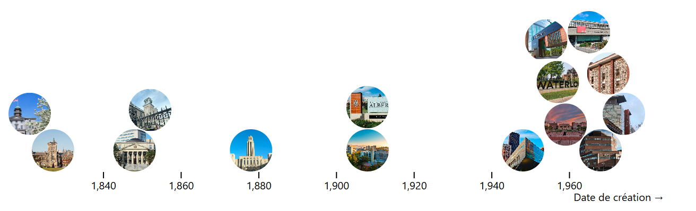
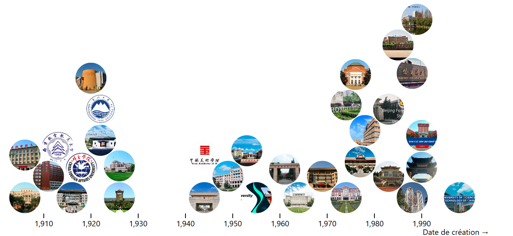
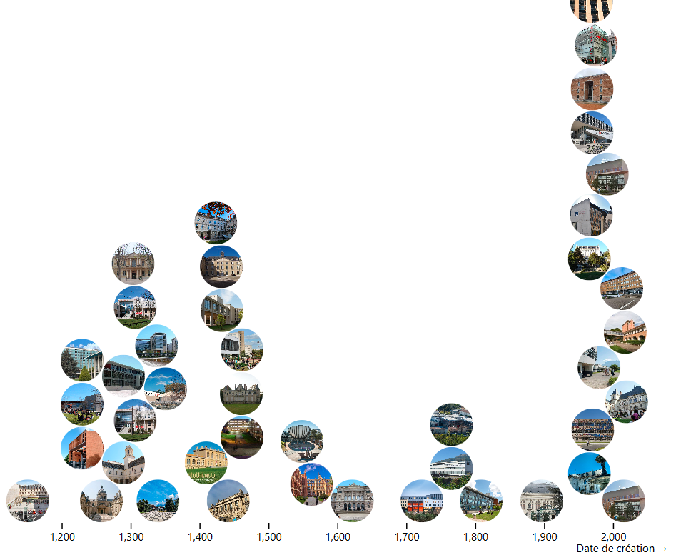
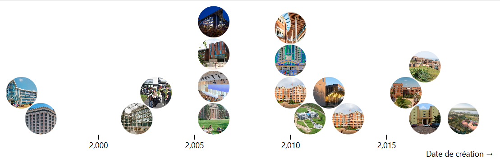

Visualisation Données Non Structurées
Rain Words Effect (la pluie texte mot par mot)
Make it Rain!
Section des photos avec observable

les universités en Canada

les universités en chine

les universités en France

les universités en Rwanda